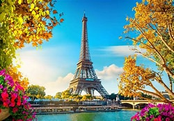
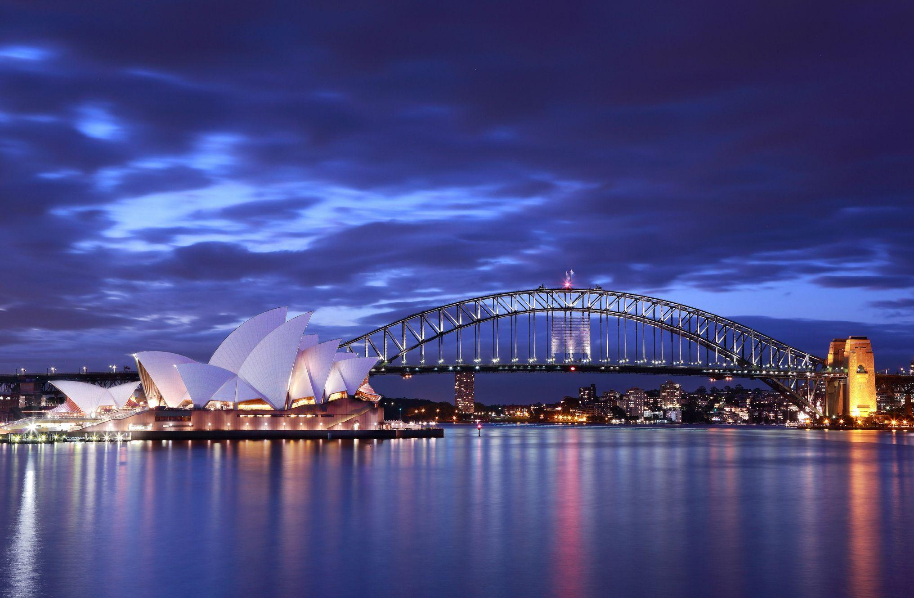

Travel Destination Guide
explore some of the worlds most iconic travel destinations!
Quick Nacigation
ABOUT THE PARIS
Paris, often called the “City of Light,” is one of the most enchanting cities in the world, blending history, art, and romance. At its heart stands the Eiffel Tower, a global symbol of France, while the Louvre Museum houses masterpieces like the Mona Lisa. Beneath the bustling streets lie the eerie catacombs, holding the remains of millions, adding a mysterious layer to the city’s charm. Strolling along the Seine River or through Montmartre reveals Paris’s authentic spirit, with cafés, fashion boutiques, and hidden vineyards. Altogether, Paris is a city where culture, architecture, and lifestyle come together to create an unforgettable experience.

PARIS LOCATION
click here to get the paris locationABOUT THE JAPAN
Kyoto and Japan together represent a fascinating blend of tradition and modernity. Kyoto, once the imperial capital, is renowned for its ancient temples, serene gardens, and traditional tea houses that preserve centuries-old culture. Walking through districts like Gion, visitors encounter geisha traditions and wooden machiya houses that echo the past. Japan as a whole is a nation of contrasts, where futuristic cities like Tokyo coexist with historic shrines and castles. The country is celebrated for its technological innovation, from robotics to bullet trains, while still deeply rooted in rituals such as tea ceremonies and seasonal festivals. Japanese cuisine, including sushi, ramen, and matcha, has become globally beloved, reflecting both simplicity and artistry. Nature also plays a central role, with cherry blossoms in spring and Mount Fuji standing as iconic symbols. Kyoto exemplifies Japan’s spiritual heart, while Tokyo showcases its modern dynamism. Together, they highlight a society that balances progress with tradition. This harmony makes Japan not only a cultural treasure but also a global leader in innovation and lifestyle.

KYOTO JAPAN LOCATION
click Here to get location of the KyotoABOUT THE NEW YORK,USA
New York City, USA, is often called “The Big Apple” and is one of the most vibrant cities in the world. It is home to iconic landmarks such as the Statue of Liberty, Times Square, and Central Park, attracting millions of visitors each year. The city is a global hub for finance, culture, and media, with Wall Street and Broadway symbolizing its economic and artistic power. Its diverse neighborhoods, from Chinatown to Harlem, reflect the multicultural spirit that defines the city. Skyscrapers like the Empire State Building and One World Trade Center dominate its skyline, showcasing architectural brilliance. NYC is also famous for its food scene, offering everything from street hot dogs to Michelin-starred restaurants. The city never sleeps, with nightlife, shopping, and entertainment available around the clock. Museums like the Metropolitan Museum of Art and MoMA highlight its rich cultural heritage. Sports fans flock to see the Yankees, Knicks, and other legendary teams. Altogether, New York City embodies energy, diversity, and opportunity, making it a symbol of modern urban life.

NEW YORK LOCATION
click Here to see the new york locationABOUT THE DELHI
Delhi, the capital city of India, is a vibrant blend of history, culture, and modern development. It is home to iconic landmarks such as the Red Fort, Qutub Minar, and India Gate, which reflect its rich heritage. The city is divided into Old Delhi, with its bustling bazaars and narrow lanes, and New Delhi, designed with wide roads, government buildings, and modern infrastructure. Delhi is also a spiritual hub, housing famous temples, mosques, and gurudwaras that showcase India’s religious diversity. Known for its street food, festivals, and colorful markets, Delhi offers a lively experience that captures the essence of India’s past and present in one place.Delhi, the bustling capital of India, is a city where history and modernity coexist side by side. It is home to magnificent monuments like the Red Fort, Humayun’s Tomb, and Qutub Minar, which reflect centuries of Mughal and Sultanate rule. The wide boulevards and government buildings of New Delhi showcase British colonial architecture, while Old Delhi’s narrow lanes and bazaars bring alive the charm of traditional India. The city is also a spiritual center, with landmarks such as Jama Masjid, Akshardham Temple, and Lotus Temple representing diverse faiths. Delhi’s vibrant street food culture, from spicy chaat to butter-laden parathas, is a delight for food lovers. Festivals like Diwali, Holi, and Eid are celebrated with grandeur, adding color and energy to everyday life. The city is a hub for politics, education, and commerce, making it one of the most influential regions in the country. Bustling markets like Chandni Chowk and Connaught Place offer everything from traditional crafts to modern fashion. Delhi also serves as a gateway to northern India, with easy access to destinations like Agra and Jaipur. Altogether, Delhi is a city of contrasts—where ancient heritage, cultural diversity, and modern aspirations come together to create a truly dynamic urban experience.

DELHI INDIA LOCATION
click Hereto get the location of the DelhiABOUT THE SYDNEY
Sydney, Australia largest city, is a dazzling blend of natural beauty and urban sophistication. Famous for its iconic landmarks like the Sydney Opera House and Harbour Bridge, the city is set against the stunning backdrop of the sparkling harbour. Sydney is also known for its beautiful beaches, including Bondi and Manly, which attract surfers and sun-seekers from around the world. The city offers a vibrant cultural scene, with museums, galleries, and theaters showcasing both local and international talent. Its diverse neighborhoods reflect a rich multicultural heritage, offering cuisines and traditions from across the globe. Sydney is also a hub for business and innovation, making it one of the most influential cities in the Asia-Pacific region. With its mix of outdoor lifestyle, modern architecture, and historic sites, Sydney captures the essence of Australia’s spirit. Whether exploring the Royal Botanic Gardens, climbing the Harbour Bridge, or enjoying a ferry ride across the bay, the city provides unforgettable experiences. Festivals and events throughout the year add to its lively atmosphere. Altogether, Sydney stands as a city of energy, diversity, and breathtaking beauty.

LOCATION OF THE SYDNEY
click Here to get the sydney locationCONTACT ME
H ARAVIND
phone number : 996483792